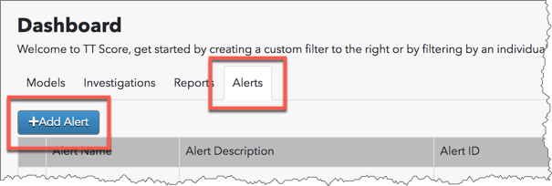
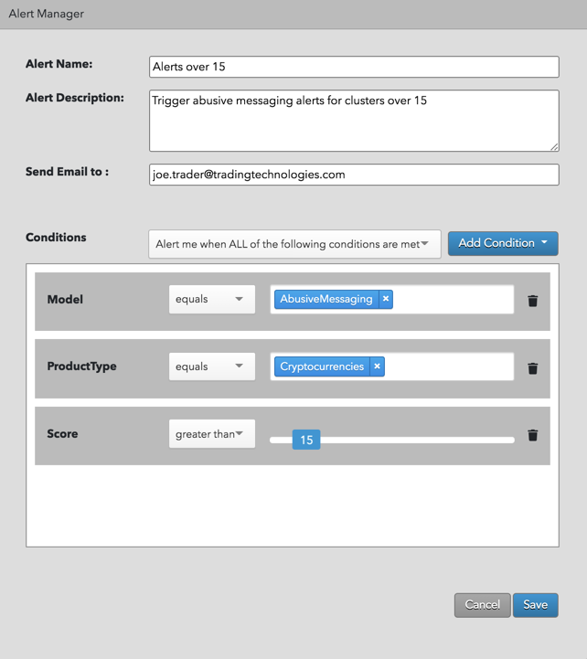
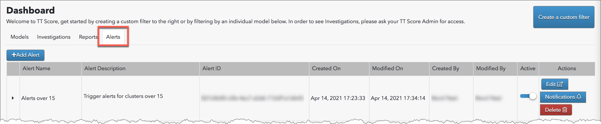
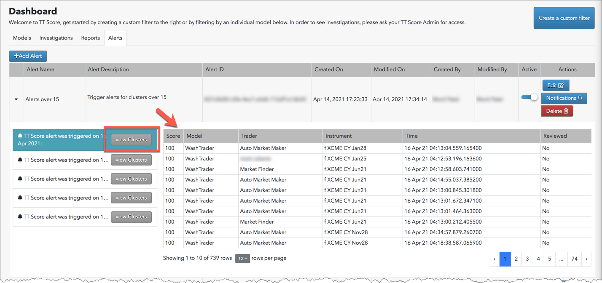

TT Score
Creating custom alerts in TT Score
TT Score gives you the ability to create and manage custom alerts that are triggered when your criteria is met for specific models, products, or scores. For example, you can create an alert that sends a user an email whenever a model scores above a certain range.
TT Score alerts page
Alerts and notifications are viewable from the alerts page via the TT Score Dashboard. As a TT Score administrator, you can create, enable, edit, and delete alerts from this page. As a user, you can review notifications and navigate directly to the clusters that caused the alert to trigger.

The alerts page includes the following:
- Add Alert — Opens the Alert Manager to create a new alert.
- Active — Enables or disables an alert.
- Edit — Opens the Alert Manager to modify an alert.
- Notifications — Displays notifications sent via email when the alert was triggered. In each notification, you can view the clusters that caused the alert to trigger.
- Delete — Deletes the alert.
Adding an alert in TT Score
- Click the Alerts tab on the Dashboard and click Add Alert.

- Configure the alert using the Alert Manager.

Enter data for the following required fields:
- Alert Name — Custom name for the alert.
- Alert Description — Purpose of the alert.
- Send email to — Sets where notifications are sent after the alert is triggered. Enter a valid email address.
- Conditions — Select one of the following criteria:
- Alert me when ALL of the following conditions are met: All conditions must be me before the alert is triggered.
- Alert me when ANY of the following conditions are met: One or more of the conditions must be met to trigger the alert.
- Add Condition — Select one or more of the following alert conditions and operators:
- Model — Creates an alert based on problematic trading model. Choose an operator and select one or more models.
- Product Type — Creates an alert based on one or more of the following product types: Options, Outrights, Spreads, Common Stock, Index, or Bond.
- Score — Creates an alert based on cluster score. Use the slider to set the score value.
- Click Save.
The status message appears in the upper right corner of the screen and the new alert is displayed at the top of the data grid.

Viewing an alert notification in TT Score
After an alert is triggered, you can view the notification on the alerts page and navigate directly to the clusters that caused the alert to trigger.
- Click the Alerts tab on the dashboard.

- Click Notifcations for the triggered alert.
Tip: You can also click the arrow in the alert row to view notifications.

- Click View clusters in the notification message.
The clusters that meet the alert criteria are displayed.

Tip: You can also click View Clusters in the notification sent to you via email to list the clusters that triggered the alert.
- To navigate to a cluster, select it in the data grid.

The Cluster Scorecard appears for the cluster you are reviewing.